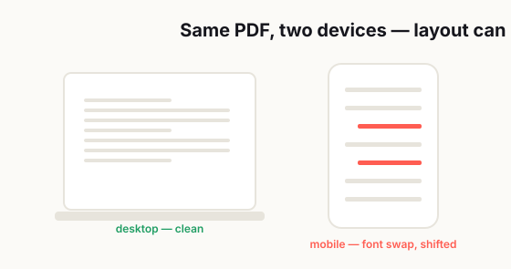

Why PDFs Always Break at the Worst Possible Time
You know that moment when everything is finally done, the deadline is way too close, and all you need to do is send one file?

And then the PDF opens with missing fonts, weird spacing, giant margins, blurry graphics, or a page that somehow got cut off for no good reason.
That's the moment when a "simple document" turns into a very personal crisis.
What makes it worse is that PDFs are supposed to be the safe option. They're the format people trust when they want a file to look finished, stable, and professional. If you send someone a Word document, they expect a little chaos. If you send a spreadsheet, they expect something might shift. But if you send a PDF, everyone assumes it'll look exactly the way you intended.
That's why PDF problems feel so annoying. The format has this reputation for being reliable, so when it fails, it feels like a betrayal. You did the responsible thing. You exported the document. You locked in the layout. You sent the final file. And somehow that final file still found a way to embarrass you.
The truth is, PDFs don't usually break because they're cursed. They break because people trust them too much.
A lot of us treat "Save as PDF" like the finish line. Once the file becomes a PDF, we mentally check out. We stop checking the details. We stop asking whether the fonts are embedded, whether the page size is correct, whether the images were compressed too hard, or whether the person on the other end is opening the file in a browser, on a phone, or in some random lightweight app that barely handles PDFs properly.
That blind trust is exactly where the trouble starts.
Why People Trust PDFs More Than They Should
One that has always stuck with me: a colleague in Japan had drawn several diagrams in AutoCAD and just needed to turn them into a PDF to email a client — but his machine had nothing that could export to PDF, and the client was chasing him. Something he assumed would take a minute, getting his drawings into one file and out the door, had him stuck and genuinely anxious, purely because the right tool wasn't on hand at that moment. I converted the drawings for him with a free option and he was done in a couple of minutes. I've watched that exact moment play out far too many times: the job itself isn't hard, the trouble is not having the tool the second you need it.
— Hill, 20 years in IT supportA PDF can preserve a well-formatted document beautifully. It can also preserve hidden problems just as beautifully. If the original file had fragile formatting, odd font choices, inconsistent margins, or design elements pulled from five different sources, the PDF may not fix any of that. In some cases, it just freezes the mess and makes it harder to notice until someone else opens it.
There's also a habit problem here. Most PDFs people deal with every week are completely fine. Invoices open normally. Bank statements look fine. Tickets scan. Contracts print. So over time, we build this quiet confidence that PDFs are naturally dependable in every situation.
That confidence is useful right up until it isn't.
Because the moment one PDF goes wrong, it usually goes wrong when the stakes are high. It's the file for a client, a manager, a job application, a school form, a legal document, a tax record, or something else that absolutely should not look broken.
PDF issues rarely show up when you're relaxed and casually organizing folders on a Sunday afternoon. They show up when somebody important is waiting.
The Most Common Reasons PDF Formatting Breaks
Here's the frustrating part: most PDF problems are caused by really ordinary things.
Not rare technical disasters. Not dramatic corruption. Just small details that get ignored because everyone is in a hurry.
Fonts are one of the biggest offenders. If a font isn't embedded properly, the receiving device may replace it with something else. That sounds harmless until you see what happens next. The line spacing changes. The heading shifts. The text wraps differently. A text box gets taller. A sentence moves to the next page. Suddenly your neat one-page layout turns into a document that looks like it gave up halfway through.
Page size is another classic problem. A file might have been designed in A4, Letter, Legal, or some custom layout, but then it gets exported or printed using different assumptions. On screen, it may look close enough. On another device or printer, the margins get weird, the page scales badly, or parts of the content get clipped.
Images can create their own mess too. If they're too high-resolution, the file becomes huge and annoying to send. If they're compressed too aggressively, everything looks muddy. And if the document contains screenshots, layered graphics, transparent elements, or visuals copied from multiple apps, the odds of something behaving strangely go up fast.
Then there's the app problem, which people constantly underestimate.
Not everyone opens PDFs the same way. One person uses Adobe Acrobat. Another opens the file in Chrome. Someone else uses Preview on a Mac. Another person looks at it on a phone. And while PDFs are designed to be consistent, the real-world viewing experience still varies more than people think. Forms may not work properly, fonts may render differently, and print behavior can change depending on the viewer.
That's why the classic line "It looked fine on my computer" never solves anything. It might have looked fine on your computer. That doesn't mean the file is truly safe.
Fonts, Page Size, Export Settings, and Device Differences
If you've ever wondered why PDFs seem unpredictable, it usually comes back to four boring details that nobody wants to think about until something breaks: fonts, page size, export settings, and device differences.
Let's start with fonts.
People choose fonts for good reasons. Maybe they want the document to look modern. Maybe they want it to match a brand style. Maybe they're just tired of looking at Arial and Times New Roman. Fair enough. But if that font doesn't travel well with the PDF, it can become a problem the second the file lands on another machine.
When a font isn't embedded correctly, the system opening the document may substitute it. And substitute fonts are like replacement parts that technically fit, but never quite line up. The width changes. The spacing changes. The rhythm of the page changes. That small visual shift can throw off the whole layout.
Page size causes a different kind of chaos. A lot of people never check it because the page looks normal on screen. But normal can be misleading. Maybe one section came from a Letter-size template and another came from an A4 file. Maybe the document started as a slide deck. Maybe a chart got copied in from another program with different dimensions. On your screen, those details may blend together. When printed or opened elsewhere, they suddenly stop blending.
Export settings matter just as much. Some settings prioritize smaller file size, which is great until the images look awful. Some settings preserve more quality, which is great until the file becomes too large to send. Some exports flatten layers. Others keep interactive elements. Some preserve form behavior. Others don't. If you rush through that step without checking what the settings actually do, you're basically hoping everything works out.
And then there's the device gap.
A file that looks clean on a large monitor may feel cramped on a phone. A form that behaves normally in a dedicated PDF reader may be annoying or half-functional in a browser preview. A margin that seems fine on screen may look too tight when printed. A tiny design problem becomes much more obvious when the viewer doesn't have the same software, settings, or screen size you do.
In other words, a PDF isn't a magic object. It's more like a packed suitcase. If everything inside is organized well, it travels fine. If not, the problem shows up when you open it somewhere else.
A Simple Checklist Before You Send Any PDF
The good news is that a lot of PDF disasters are preventable.
You don't need to become a document specialist. You just need a repeatable habit that catches the obvious stuff before another person catches it for you.
Here's a simple pre-send checklist that saves a surprising amount of stress:
- Open the exported PDF, not just the source file.
- Skim every page, especially pages with tables, forms, charts, signatures, or images.
- Confirm the page size is correct.
- Zoom in on body text and make sure it still looks sharp.
- Check that fonts are consistent across the document.
- Test links, buttons, and form fields if the file includes them.
- Use print preview or export a print test page if the document may be printed later.
- Open the file in a second app or on a second device if it's important.
- Double-check the filename before sending it.
- Make sure the file size is reasonable for email or upload.
That probably sounds a little boring. It is. But boring workflows are often the most useful ones.
The difference between a smooth send and a messy email thread is often just two extra minutes of checking.
One of the smartest little habits is sending the file to yourself first. Open it fresh, ideally on a different device. Don't trust your memory of how the original looked. Judge the PDF as if you were the person receiving it for the first time.
That shift matters more than people think. It forces you to stop looking at the file like its creator and start looking at it like its audience.
What to Do When the PDF Already Looks Broken
Sometimes the problem shows up late. Maybe you only notice it after export. Maybe someone else notices it first and now you're trying to sound calm while quietly fixing the mess.
First, don't start randomly changing things. That usually makes the problem worse.
Try to identify what actually broke.
If the text looks wrong, look at fonts first. If spacing shifted, check whether a font got replaced or a text box resized. If the page looks cropped, verify page size and margins. If the images are blurry, the export quality may be too low. If the file only looks bad in one app, test it in a different viewer before assuming the whole PDF is corrupted.
This part matters because not every bad-looking PDF is truly broken. Sometimes the file is fine and the viewer is the problem. That distinction can save you a lot of wasted time.
If you need to send the document quickly, focus on the practical fix. Use safer fonts. Simplify the layout. Re-export with cleaner settings. Flatten elements that don't need to remain interactive. Prioritize readability over visual perfection.
Most people receiving a PDF are not grading you on design purity. They just want the file to open, look clean, and do its job.
That's the real standard.
The Habits That Save Time Every Week
The long-term fix isn't learning every technical detail about PDFs. It's building a workflow that quietly prevents the same mistakes from happening again.
Start with cleaner source documents. The more you mix screenshots, copied formatting, brand fonts, pasted charts, and last-minute edits from different apps, the more fragile the document becomes. Fancy layouts are fine when they're necessary, but routine documents usually benefit from simplicity.
Use standard fonts and standard page sizes whenever you can. If the file is a report, invoice, agreement, checklist, resume, or form, boring is often better. A plain PDF that works everywhere is more professional than a stylish PDF that breaks under pressure.
Also, stop treating export as the last step. Review is the last step. Export creates the file. Review confirms the file is actually safe to send. Those are two different things, and mixing them up is where a lot of document trouble begins.
It also helps to create your own safe workflow. Maybe that means always exporting from the same app, always checking on desktop and mobile, always using a trusted font set, and always opening the PDF once before attaching it to an email. The details can be simple. The important part is consistency.
At the end of the day, PDFs don't really break at the worst possible time by accident.
They break at the worst possible time because that's when we finally notice the small things we skipped earlier.
And honestly, that's not bad news. It means the solution usually isn't luck. It's process.
A little less trust. A little more checking. A little more respect for the idea that "saved as PDF" is not the same thing as "safe from problems."
That tiny difference is where most of the stress lives.
If you remember that, your PDFs probably won't become perfect.
But they will become a lot less likely to betray you five minutes before a deadline.
Related reading: Two common culprits behind broken-looking PDFs are size and delivery — see how to compress a PDF without ruining quality and the easiest way to send large PDF files.
Frequently asked
Why does my PDF look different on another device?
A PDF may look different on another device because of missing fonts, viewer differences, page size mismatches, export settings, or unsupported formatting elements.
How can I stop a PDF from breaking after export?
Use standard fonts, confirm the correct page size, export with quality settings that match your goal, and always open the exported PDF on a second device or app before sending it.
Why are fonts missing or spacing wrong in my PDF?
That usually happens when fonts are not embedded correctly or when the receiving device replaces the original font with a different one, which changes spacing and line breaks.
What should I do if a PDF already looks broken?
Go back to the source file, check fonts, margins, page size, image quality, and export settings, then create a new PDF and test it in more than one viewer.